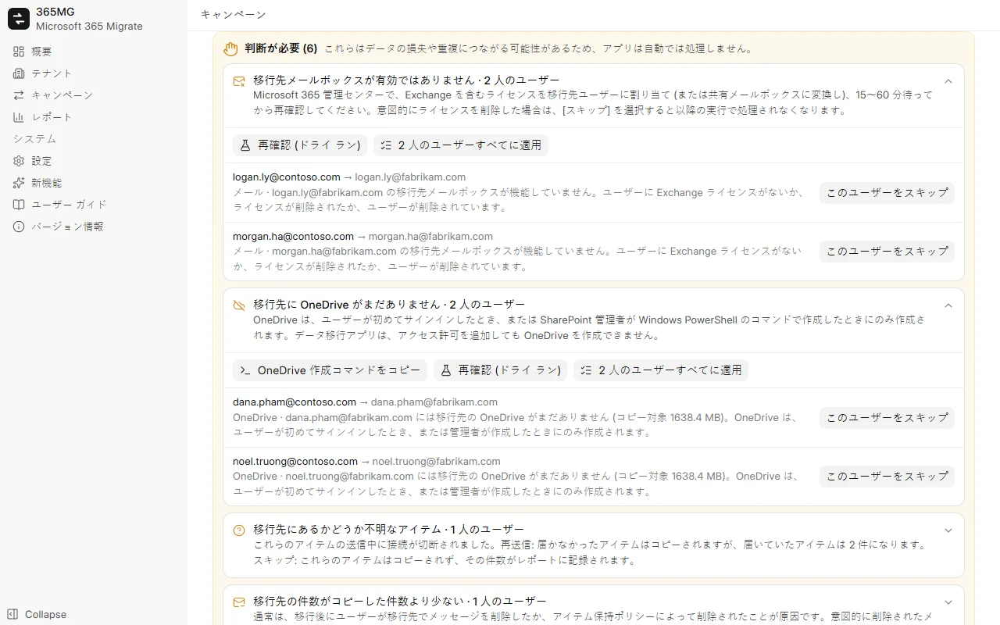

Microsoft 365 と Google Workspace
任意の数の Microsoft 365 テナントと Google Workspace アカウントを接続し、どの方向にもコピーできます: Microsoft ↔ Google、Microsoft → Microsoft、Google → Google。
任意の数の Microsoft 365 テナントと Google Workspace アカウントを接続し、どの方向にもコピーできます: Microsoft ↔ Google、Microsoft → Microsoft、Google → Google。
フィルターで移行元ユーザーを選択し、移行先ユーザーと自動で照合し、移行先ドメインとライセンスを一括で割り当て、不足しているユーザーを作成します。
Exchange メールボックス API を通じてすべてのアイテムをフォルダーごとにエクスポートおよびインポートします。アイテムごとのジャーナルにより、停止した実行は中断した箇所から続行されます。
ファイルとフォルダーをコピーし、作成日時と更新日時を保持し、すべてのファイルを quickXorHash で検証し、大きなファイルは再開可能な 64 MB 単位の範囲でダウンロードします。
配布リストとメールが有効なグループを、同じエイリアス、メンバー、所有者を持つ Microsoft 365 グループとして再作成します。
ユーザーをウェーブに分割し、何も書き込まずに実行時のコピー量を集計してから実際にコピーし、切り替えまでスケジュールに従って同期を続けます。
移行先のメールボックスや OneDrive がない、ユーザーが再作成された、結果が不明なアイテムがある、といった場合は、それぞれを解決する操作とともに「判断が必要」リストに表示されます。
ユーザー別および合計の移行元とコピー済みの比較、確認が必要なユーザー、グループ、メモを表示します。単一の HTML ページまたは CSV としてエクスポートできます。
English、Tiếng Việt、简体中文、한국어、日本語、Deutsch、Русский、हिन्दी、العربية (右から左)。
すべての安全策は、350 ユーザーの会社を移行した際に発生した問題に基づいています。途中でライセンスを失ったメールボックス、まだ存在しなかった OneDrive、送信中に切断された接続などです。
